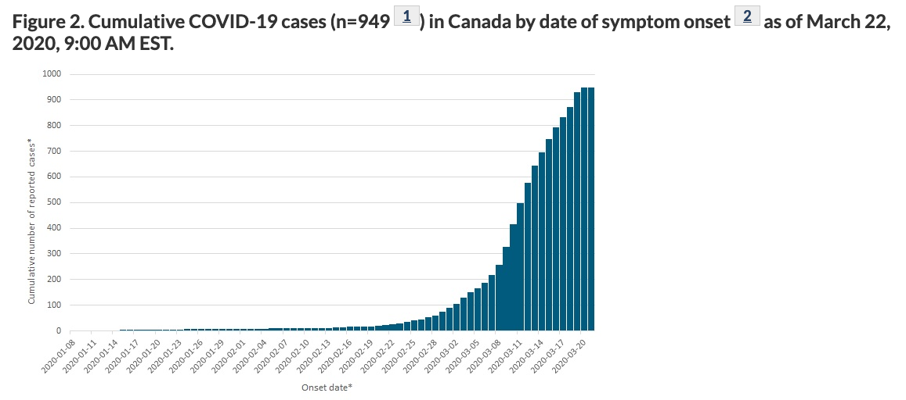
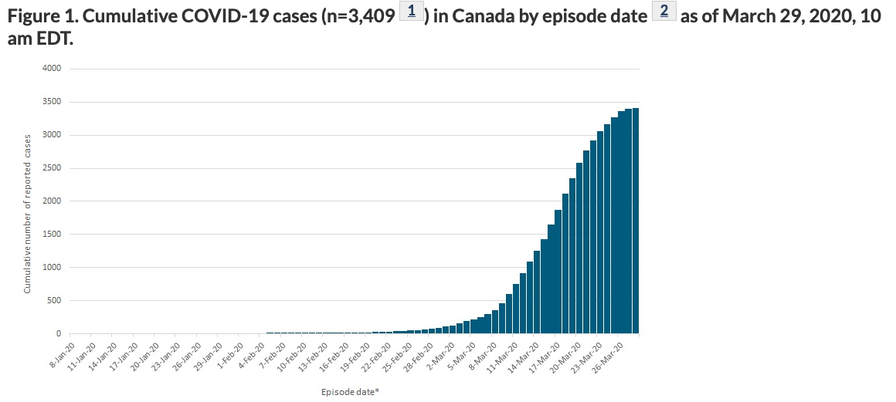
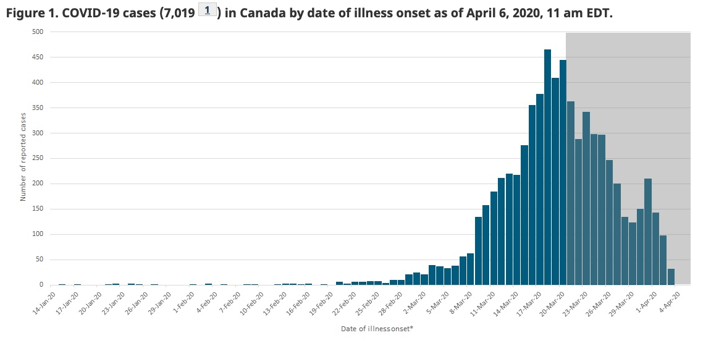
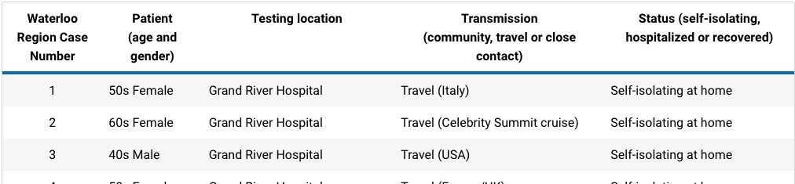
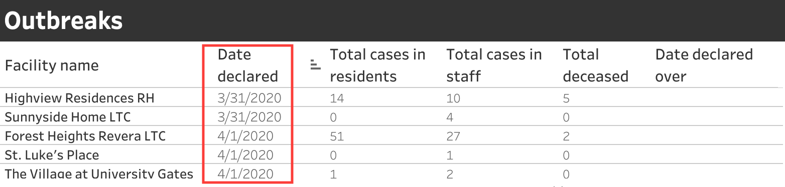
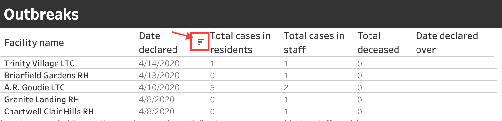

Data Presentation of COVID-19
In a crisis, I like to look at the data. I want to know exactly how bad things are and how worried I should be. So for about a month, I have been obsessively checking various websites for the latest updates on COVID-19 cases in my city, my country, and around the world. (I know this isn't the best for my mental health, and recently I installed a browser plugin to block myself from visiting those sites for more than 10 minutes a day).
In this time, I have noticed a trend in the governmental sources of data, and it worries me. I'm not talking about the trend of COVID cases rising, which is worrying enough, but a trend in how the data is being presented. In short, data is being presented to create the most hopeful impression. Let's take a look at two examples:
Canada
I used the WayBack Machine to grab this snapshot of the cumulative COVID-19 cases in Canada as shown on the official government website on March 23, 2020:
It looks like we're "flattening the curve"! Yay!
One week later, it still looks like we're "flattening the curve", and the image has been promoted to "Figure 1":
Then, another week after that, April 6, 2020, there is no longer a figure showing cumulative cases, and the honour of being "Figure 1" has been given to this hopeful image:
Notice the grey area - any data in that area is incomplete, since there is a lag between when people get sick and when they get tested. The website acknowledges this, but it is not the clearest way to show uncertainty.
As of this writing, the federal website still only shows data by illness onset, as well as demographic and exposure setting data. If we want to know the cumulative numbers, we're forced to turn to other sources.
Waterloo Region
I initially didn't like the Region of Waterloo's data presentation. It was just a table that had information for every case, including the patients' age, gender, where they were tested, how they caught it, and whether they were hospitalized or in self-isolation. It was nearly impossible to get an overall picture without scraping the data from the page and making your own graphs (which I did for about a week).
Since then, the region has really stepped up their game (as I would expect from Canada's Silicon Valley) and now has a gorgeous, interactive interface showing a wealth of information. I only have one minor complaint about their data presentation: the "Outbreaks" table, which shows cases in long-term care facilities and retirement homes, used to be sorted by the date the outbreak was declared, from oldest to newest:
(The red box is my addition.)
Ordering it from oldest to newest meant that the numbers at the top had been steadily growing as the illness spreads. Today I noticed that this table is now sorted by default from newest to oldest:
Where are all the cases? These outbreaks don't look that bad...
See, ordering it in this way conceals the larger, scarier numbers - unless you scroll down within that box or click the little button next to "Date declared" that reverses the order.
So, what is going on?
I don't know why the data is being presented this way. I could speculate, but doing that leads too quickly to conspiracy-theory-land, which I'd rather stay out of. Instead, I'll just say that when an organization presents data to the public, they are taking on an important responsibility. They should be committed to presenting the story that comes from the data, and not manipulating the data to fit the story they want to tell.
I want to trust my government. I think that all levels of government have been doing a fairly decent job of taking measures to control the spread of the virus. But I don't like that I'm being forced to seek non-governmental sources of data on COVID-19 cases.
There is a lot of misinformation out there, so much that the WHO has a webpage specifically to debunk myths. People need access to good information from trusted sources, because otherwise we'll be easy targets for bad information from malicious sources. Our governments should not be concealing or obscuring data through misleading graphs. It's time to step up, Canada.